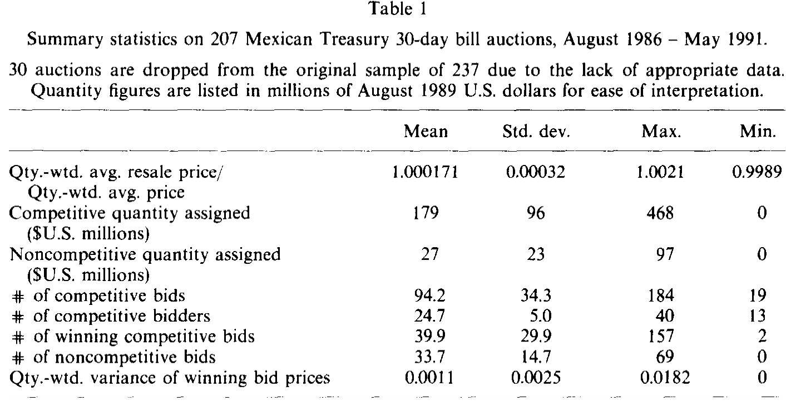
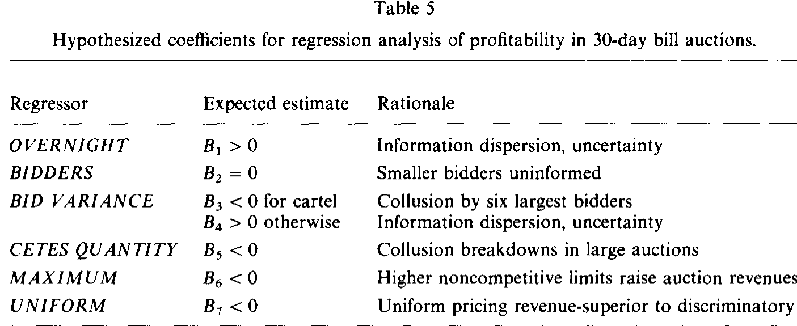
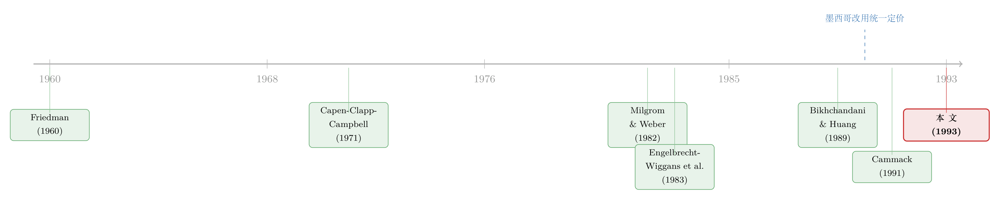

一台照搬美国的拍卖机器，和它在 1990 年的那次「换挡」
本文读的是 Umlauf (1993, Journal of Financial Economics)：墨西哥 1986–1991 年的国债拍卖几乎照搬了美国的规则，于是 1990 年它从「歧视性定价」切换到「统一定价」这件事，就成了一场难得的自然实验。结果是——竞标者的利润几乎一夜归零（歧视性下每场平均赚 $36,000、利润率 2.04 个基点，统一定价下变成 -$3,000、-0.3 个基点，差异的 t 值 3.32），这同时印证了共同价值拍卖理论里「第二价格优于第一价格」的收入优越性，也印证了 Friedman 关于「统一定价更难维持合谋」的老论断。
1 一个三十年没吵完的问题
先从一桩丑闻说起。1991 年，所罗门兄弟（Salomon Brothers）的交易员在美国国债拍卖里替客户超额竞标，买下了远超法定上限的份额，一时舆论哗然。这桩「所罗门事件」把一个本就争论不休的老问题又顶到了台面上：美国政府每周发行几十亿美元的国债，它用的那套拍卖机制，到底有没有替纳税人把钱卖到最高价？
争论的焦点，集中在政府该选「歧视性定价」还是「统一定价」。所谓 歧视性定价 (discriminatory pricing)，是中标者各自照自己报的价付款；而 统一定价 (uniform pricing) 下，所有中标者付的是同一个价。粗略地说，这俩分别对应拍卖理论里的 第一价格 (first-price) 与 第二价格 (second-price) 拍卖。共同价值拍卖理论——尤其是 Milgrom and Weber (1982)——给出过一个漂亮的结论：第二价格拍卖能带来更高的期望收入，因为它把成交价钉在了「最高的落标价」上，从而缓解了 赢家的诅咒 (winner's curse)，诱使大家报得更高。Friedman (1960, 1991) 则从另一个角度主张统一定价：它更难维持合谋。
理论吵了三十年，问题是——怎么验证？ 美国国债拍卖从没在样本期里换过定价规则，你拿不到一个干净的对照组。于是这篇论文的全部价值，可以浓缩成一句话：墨西哥替我们做了这个实验。
2 墨西哥：一台几乎照搬美国的拍卖机器
1986 年年中，墨西哥财政部开始用一套「几乎与美国一模一样」的机制拍卖国内债务。本文盯住的是其中一种工具——一个月期、以比索计价的零息券 CETES，它在样本期内平均占墨西哥国债面值的 25%。
在歧视性拍卖里，竞标者交上密封的「折扣—数量」对，折扣按下式换算成价格：
$$ Price = 100 - Discount \times Maturity/360. $$
每周有 40 多家机构参与，平均约 25 家递交竞争性报价。除竞争性报价外，还可以交一份只报数量、不报折扣的 非竞争性报价 (noncompetitive bid)，这部分保证中标、按中标竞争性报价的量加权均价付款。债务从最低折扣开始往上分配，直到发完。
这里有个容易被忽略的细节：转售。大部分新债在周三下午就被立刻转卖给没参加周二拍卖的投资者，许多参与者「债还没到手就已经卖掉了」，持有期是零。正是这个 转售 (resale) 特征，确保了墨西哥的国债拍卖属于 共同价值拍卖——所有人争的是同一个、不确定的转售价。这一点是后面所有理论含义的地基。
真正关键的一步在 1990 年年中：墨西哥把歧视性定价换成了统一定价，明确目标是「打击合谋、提高拍卖收入」。在墨西哥版的统一定价里，所有中标者付的是最低中标价（美国讨论的版本付的是「最高落标价」，更贴近标准第二价格拍卖，但作者论证墨西哥这版同样收入占优）。
而墨西哥这台机器还有一个美国没有的零件：公开承认的合谋。参与者公开承认六家最大竞标者之间存在卡特尔——墨西哥的反垄断法极不发达，金融圈又小又紧密（六大里有两家由同一家族成员持有）。卡特尔在每场拍卖前商定报价、瓜分份额；而拍卖规则里「单个竞标者不得买走超过竞争性发行量 40%」（1989 年 7 月起放宽到 60%）的上限，反而让这种「分赃」比轮庄更好使。更妙的是，监督合谋的两件「神器」都是现成的：周三央行会公布报价—数量的联合分布，外人能反推出大玩家的报价区间；货币市场交易又是公开可见的，谁背叛了卡特尔，当天就能被逮个正着。再加上资本管制（不能为超过自身资本金 100 倍的债务竞标）和外资禁入，进入被牢牢锁死，没有外人能把利润竞争掉。
这就把舞台搭好了：一个公开合谋、信息高度不对称、又在样本中途换了定价规则的市场。
3 拍卖理论给的三条「稳健含义」
这篇论文有个老实的自我设限：多单、多份额拍卖至今没有可估计的均衡竞标模型，所以作者不去估一个「严谨的结构模型」，而是把单单、单份额拍卖的几条稳健含义拿来逐一对照。值得把这三条讲清楚，因为后面的每个结果都挂在它们上面。
第一，赢家的诅咒。 每个竞标者拿到的是对标的物的无偏估计，但「赢」本身是个坏消息——它意味着别人都估得比你低。于是理性竞标者必须把报价从自己的估计往下压，压的幅度随竞标者之间估计的离散程度递增。Capen, Clapp, and Campbell (1971) 和 Hendricks, Porter, and Boudreau (1987) 在海上油田租约拍卖里证实了赢家诅咒确实存在。
第二，统一定价的收入优越性。 Milgrom and Weber (1982) 证明第二价格优于第一价格，机制正是缓解赢家诅咒；Bikhchandani and Huang (1989) 把它推广到国债拍卖，还指出公开宣布中标价时，转售会让竞标者在统一定价下报得更凶——因为此时「报高一点去向转售市场发信号」更便宜。这些都指向：统一定价该比歧视性定价收更多钱（也就是把竞标者的利润压下去）。
第三，信息不对称。 Engelbrecht-Wiggans, Milgrom, and Weber (1983) 建了一个模型：一部分「不知情」竞标者的估计比「知情」对手更不精确。在极端情形里，若不知情者只凭公开信息竞标，他们均衡期望利润为零、并随机化自己的竞标决策，而知情者赚正利润；更反直觉的是，此时新增不知情竞标者，既不影响在位知情者、也不影响在位不知情者的盈利。这一条，正对应墨西哥的「大竞标者 vs 小竞标者」。
论文反复强调：这些不是从某个被估计的竞标模型里推出来的，而是共同价值拍卖理论的稳健含义。这是它的诚实，也是它的软肋——我们后面会回到这一点。
4 数据与样本
样本期为 1986 年 8 月到 1991 年 5 月，财政部一共执行了 237 场 CETES 拍卖，剔除报价或转售价数据缺失的 30 场后，最终样本为 207 场（含 20 场被部分/完全取消、12 场认购不足，结果不依赖于是否纳入它们）。数据细到每一个「参与者身份已识别」的竞争性与非竞争性报价，加上周三货币市场转售交易的量加权折扣——有了它，整场拍卖可以被完整重建。所有金额都先用墨西哥 CPI 重新基准化到 1989 年 8 月、再换成美元，方便解读。
表 1 给了拍卖的概况：每周发行的 CETES 平均面值约 $206 million，其中 $179 million 分给竞争性报价、$27 million 分给非竞争性报价（后者平均占发行量不到 15%）。

Table 1
5 反转：利润为什么一夜归零
现在到了全文的转折。把样本按定价规则一切两半——181 场歧视性、26 场统一定价——两种拍卖形态的盈利能力呈现出戏剧性的反差。
歧视性拍卖里，竞争性竞标者的总利润平均每场 $36,000，平均利润率 2.04 个基点（表里列的是跨歧视性拍卖的加权平均 1.84 个基点）；而统一定价下，平均利润变成 -$3,000，利润率 -0.3 个基点。换言之，竞标者的利润——连六大卡特尔成员的利润——在统一定价下基本被抹平为零。两个定价regime 利润率之差为 2.34 个基点，用 0.000305 和 0.000504 的标准差及 181、26 的样本量算出来，差异的 t 值是 3.32，在 1% 水平上显著。
接着，一个自然的问题是：这会不会只是巧合？也许利润本来就在长期趋势性地走向零，统一定价只是恰好赶上了终点？也许是竞标者还没适应新机制？作者把这两条都堵死了：在竞争性竞标者利润率的时间序列上，可以看到一个大的、负的冲击恰好砸在统一定价引入那一刻——不是平滑收敛，而是断崖；而 26 场统一定价横跨了整整 10 个月，足够任何人学会在新环境里操作了。
这个结果之所以重要，是因为它同时坐实了两套理论：既符合共同价值拍卖理论「第二价格优于第一价格」的收入优越性，也符合 Friedman「统一定价让合谋更难维持」的论断。可惜——这也是作者最克制的地方——你没法判断统一定价下的低利润，究竟是合谋被瓦解了，还是单纯赢家诅咒被缓解了。两条机制指向同一个方向，数据无法把它们分开。
那么信息不对称呢？证据落在「大 vs 小」上：大竞标者的事后利润和利润率都超过小竞标者；当大竞标者报得不那么凶（或干脆不报）时，小竞标者就开始亏钱；而且小竞标者的进出，并不能解释在位大、小竞标者总盈利的变化——这恰恰是 Engelbrecht-Wiggans, Milgrom, and Weber (1983) 那个「不知情者只凭公开信息竞标」模型的预测。
还有一个温和但要紧的结论：总利润非负，说明竞标者整体上把赢家诅咒算进去了。那些亏钱的竞标者，更像是「运气不好」，而不是「不懂赢家诅咒」——这一点恰好与 Hendricks, Porter, and Boudreau (1987) 在油气租约里「竞标者未必考虑赢家诅咒」的发现相反。
6 回归：把合谋与赢家诅咒拆开来看
光看均值还不够。论文最后用 OLS 把利润率回归到一组代理变量上，分三个样本跑——全样本、卡特尔、非卡特尔。回归模型本身长这样（我把最关键的几个回归元用旁注卡片标出来）：
其中 OVERNIGHT 是用拍卖执行日前五天（含当日）隔夜拆借利率隐含的一个月债价方差来构造的，隐含价格按下式算：
$$ \text{Implied price of one-month bond on day } t = 100/(1+R_t)^{M_t/360}, $$
这里 \(M_t\) 是即将发行的 CETES 的到期天数，\(R_t\) 是第 \(t\) 日年化的加权平均隔夜拆借利率。隔夜市场与 CETES 转售市场紧紧相连——为隔夜拆借提供资金的人，正是 CETES 的最终需求方；当隔夜利率越不可预测，CETES 的需求也越不可预测，恶性通胀最逼近时 OVERNIGHT 也最大。

Table 5
这套设计的精妙之处，在于它让几个相互缠绕的故事各自露出指纹。BID VARIANCE 有两副面孔：拍卖若是竞争性的，中标价的事后离散反映竞标者事前估计的差异（正号）；但更宽的价格分散也可能意味着卡特尔成员没能把报价「做齐」（负号）。于是——卡特尔样本里的负系数，配上非卡特尔样本里的非负系数，就成了「BID VARIANCE 确实在代理合谋程度」的证据。同理，CETES QUANTITY 与卡特尔利润的负相关，意味着合谋在更大的拍卖里更容易破裂（因为背叛的诱惑随蛋糕变大）；而 BIDDERS 上的零系数，则印证了「小竞标者只凭公开信息」的极端情形。
论文也老实交代了计量上的隐忧：序列相关与同时性偏误。作者论证这些问题不至于推翻 OLS 的推断，结果对回归元的取舍也稳健——但这毕竟是一篇 1992 年的实证，标准误的处理放到今天会被审得更严。
关于国债拍卖里「赢家诅咒 vs 输家噩梦」的张力，这条研究后来走得更远（可参见《国债拍卖桌上的两种恐惧：赢家的诅咒，与输家的噩梦》）；而统一价格拍卖为什么也会冒出「打折」与市场势力，则是另一段公案（见《把价格切成小格子，垄断就消失了》）。
7 文献脉络
把这条线捋一捋，会看到一个很清晰的「理论先行、实证追赶」的故事。
最早是 Friedman (1960, 1991) 从直觉出发主张统一定价能打击合谋——但他始终没给出一个均衡竞标模型，这是个悬而未决的命题。接着，共同价值拍卖与赢家诅咒的理论骨架在 1970–80 年代被搭起来：Wilson (1977)、Milgrom (1979a, 1979b) 讨论竞标者数量趋于无穷时报价偏差如何消失，Capen, Clapp, and Campbell (1971) 在油气租约里首次「测」到赢家诅咒。真正关键的一步是 Milgrom and Weber (1982)，它证明了第二价格对第一价格的收入优越性，并指出信息越分散、收入越低；同年代的 Engelbrecht-Wiggans, Milgrom, and Weber (1983) 则把信息不对称模型化。到了 Bikhchandani and Huang (1989) 手里，这些含义被专门搬进国债拍卖，还加上了「转售—信号」的新机制。

实证那一侧，Hendricks, Porter, and Boudreau (1987)、Hendricks and Porter (1988) 在 OCS 油气租约里记录了信息不对称与合谋；Cammack (1991) 研究美国国债拍卖，但她既拿不到竞标者层面的盈利数据，样本里也没有 regime 切换，没法比较两种定价。本文 (Umlauf, 1993) 恰好补上了这两块空白：它有参与者身份识别的逐笔报价，又抓住了 1990 年那次切换——这是当时唯一公开可得的、国债拍卖里统一与歧视性定价的直接比较。它与 Hendricks–Porter 那一支是互补的，只是制度背景大相径庭，而且在「竞标者是否考虑赢家诅咒」这一点上给出了相反的答案。
评论与延伸（Q&A + 研究方向）
(a) 几个可能的疑问
Q：墨西哥版统一定价付的是「最低中标价」，而美国讨论的版本付「最高落标价」，这俩还能算同一回事吗？
不完全是。付「最高落标价」更贴近标准的第二价格拍卖，Bikhchandani 和 Huang 的收入优越性证明是针对那一版的。但作者论证，他们的证明可以改造到墨西哥这版：因为在墨西哥，除了最低中标者，每个中标者付的价都低于自己的报价，这条「价格挂在更低报价上」的链条仍然在，统一定价依旧收入占优。
Q：利润一夜归零，凭什么不是「适应新机制」或「长期趋势」？
两条都被堵死了。利润率时间序列上是一个砸在切换点上的断崖式负冲击，不是平滑收敛，排除了趋势收尾；而 26 场统一定价横跨 10 个月，学习期绰绰有余，排除了适应说。
Q：那这究竟证明了「合谋被瓦解」还是「赢家诅咒被缓解」？
作者最诚实的一句话就是：分不开。Milgrom-Weber 的收入优越性和 Friedman 的反合谋论断，对统一定价利润的预测同向，数据无法识别两者各自的贡献。这是结论的天花板。
Q：「总利润非负 ⇒ 竞标者考虑了赢家诅咒」，这个推断稳吗？
逻辑是：若竞标者系统性忽视赢家诅咒，总利润应当为负（系统性地买贵）。观察到非负、亏损者更像「运气不好」，是支持性证据。但这是个间接论证，依赖转售价能干净地代理共同价值——若转售市场本身有摩擦，推断会被污染。
Q：为什么 BIDDERS 系数为零反而是「好消息」？
因为它正中 Engelbrecht-Wiggans–Milgrom–Weber 的极端预测：小竞标者只用公开信息时，他们的进出不影响在位者盈利。零系数把「小竞标者是不知情的边缘玩家」这个故事坐实了，而不是模型失败。
Q：这对今天的美国国债拍卖之争有什么含义？
它提供了当时唯一一个「同一市场、换了定价规则」的直接证据，方向上支持统一定价能增收。但要小心外推：墨西哥有公开合谋、外资禁入、资本管制，这些是美国没有的；统一定价在一个「本来就高度合谋」的市场里效果最猛，未必能照搬到竞争已经很充分的市场。
(b) 几个可能的研究问题与提案
1. 把「合谋」与「赢家诅咒」识别开。 【经济故事】本文最大的遗憾是两条机制无法分离。若能找到一个只动其中一条的外生冲击（比如卡特尔成员数量的变化、或转售市场透明度的政策变动），就能把统一定价的「收入增量」拆成「反合谋」和「缓解诅咒」两块。 【可行性】中。需要更细的卡特尔成员进出数据和一个干净的制度断点；新兴市场国债拍卖里这类规则变动并不罕见，identification 可走 DiD，但找到「只影响一条机制」的冲击是难点。
2. 把这套设计搬到公司债一级市场。 【经济故事】公司债发行也在「簿记建档 vs 拍卖」「歧视性 vs 统一」之间摇摆，且承销团里同样有少数大玩家。能不能用某个市场的发行机制切换，复制 Umlauf 的利润对比？ 【可行性】中。数据上，TRACE 这类成交库加上一级市场配售记录可以重建发行人「留在桌上的钱」；难在公司债发行的异质性远大于同质的 CETES，需要大量控制变量，identification 不如本文干净。
3. 外资禁入如何改变拍卖竞争与利润。 【经济故事】墨西哥当年禁止外资竞标，正是「进入被锁死、利润收不掉」的关键一环。若某国后来放开外资进入国债拍卖，应能观察到竞标者利润被压缩、价差收窄——这把「外资持有人」与「拍卖市场势力」直接接上了。 【可行性】高。许多新兴市场都有外资准入的明确时点（可投资度变化），可做事件研究/DiD；难点是要拿到竞标者层面的盈利数据，多数央行不公开，需要逐国谈判数据访问。
4. 转售市场透明度与拍卖合谋的互动。 【经济故事】本文指出，正是货币市场交易「公开可见」让卡特尔能监督背叛。那么提高（或降低）二级市场透明度，会让一级拍卖里的合谋更易还是更难维持？这把市场设计的两端连了起来。 【可行性】中。可借助 TRACE 这类透明度改革作为冲击，看相关发行人一级市场利润率的变化；识别上要分离透明度对「合谋监督」与对「流动性」的两条通道，较难。
参考文献
- Bikhchandani, S., and C. Huang (1989/1990). Auctions with resale markets: An exploratory model of Treasury bill markets. Review of Financial Studies / working paper.
- Cammack, E. (1991). Evidence on bidding strategies and the information in Treasury bill auctions. Journal of Political Economy 99(1), 100–130.
- Capen, E. C., R. V. Clapp, and W. M. Campbell (1971). Competitive bidding in high-risk situations. Journal of Petroleum Technology 23, 641–653.
- Engelbrecht-Wiggans, R., P. Milgrom, and R. Weber (1983). Competitive bidding and proprietary information. Journal of Mathematical Economics 11, 161–169.
- Friedman, M. (1960). A Program for Monetary Stability. Fordham University Press.
- Hendricks, K., and R. H. Porter (1988). An empirical study of an auction with asymmetric information. American Economic Review 78(5), 865–883.
- Hendricks, K., R. H. Porter, and B. Boudreau (1987). Information, returns, and bidding behavior in OCS auctions: 1954–1969. Journal of Industrial Economics 35(4), 517–542.
- Milgrom, P. (1979). A convergence theorem for competitive bidding with differential information. Econometrica 47(3), 679–688.
- Milgrom, P., and R. Weber (1982). A theory of auctions and competitive bidding. Econometrica 50(5), 1089–1122.
- Porter, R. H. (1983). A study of cartel stability: The Joint Executive Committee, 1880–1886. Bell Journal of Economics 14(2), 301–314.
- Umlauf, S. R. (1993). An empirical study of the Mexican Treasury bill auction. Journal of Financial Economics 33(3), 313–340.
- Wilson, R. (1977). A bidding model of perfect competition. Review of Economic Studies 44(3), 511–518.